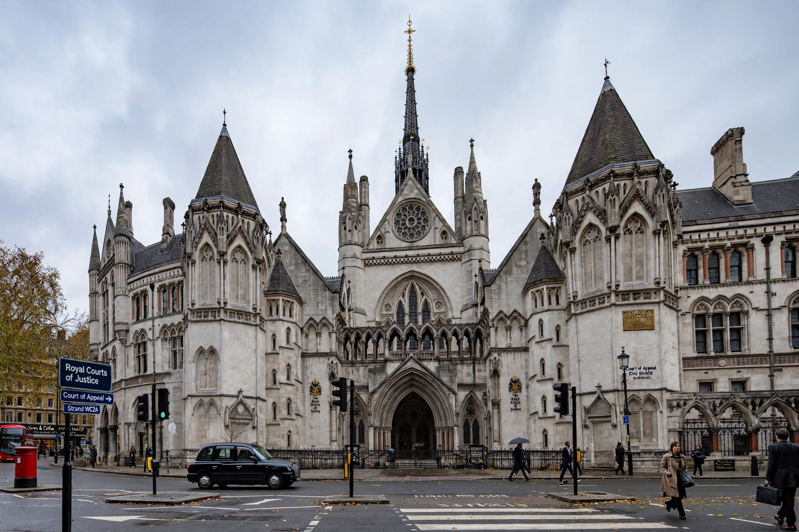

From Wikipedia, the free encyclopedia
| Court of Appeal | |
|---|---|
 | |
| Established | 1875 (Judicature Acts) |
| Location | Royal Courts of Justice, Strand, London |
| Divisions | Civil Division; Criminal Division |
| Head | Master of the Rolls (Civil); Lord Chief Justice (Criminal) |
| Appeals to | Supreme Court of the United Kingdom |
The Court of Appeal is the highest court within the Senior Courts of England and Wales, and second only to the Supreme Court of the United Kingdom in the hierarchy of the courts. It was created by the Judicature Acts of 1873–1875 and sits at the Royal Courts of Justice in London.
The court has two divisions. The Civil Division, headed by the Master of the Rolls, hears appeals from the High Court, county courts and certain tribunals. The Criminal Division, headed by the Lord Chief Justice, hears appeals from the Crown Court against conviction and sentence. Judges of the court are Lords Justices of Appeal (and Lady Justices), styled "Lord Justice" or "Lady Justice" followed by their surname.
Permission to appeal is generally required. The Civil Division can affirm, reverse or vary a lower court's order; the Criminal Division may quash a conviction as unsafe, order a retrial, or vary a sentence. Panels usually consist of three judges. Famous cases heard in the court include the appeals arising from historic miscarriages of justice such as the Birmingham Six and Guildford Four, whose convictions were quashed in the Criminal Division (1989–1991).
Before 1875 appellate jurisdiction was fragmented among the Exchequer Chamber and other bodies. The Judicature Acts unified the superior courts into a Supreme Court of Judicature (later Senior Courts) with a single Court of Appeal. Criminal appeal rights were greatly expanded by the Criminal Appeal Act 1907, creating a Court of Criminal Appeal whose functions merged into the unified court in 1966.